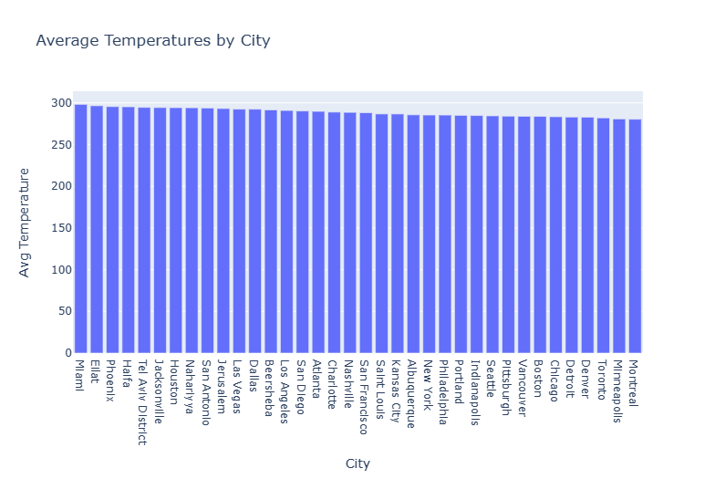
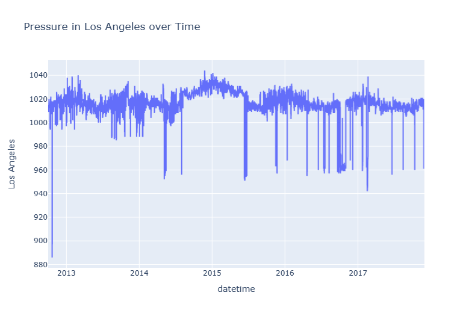
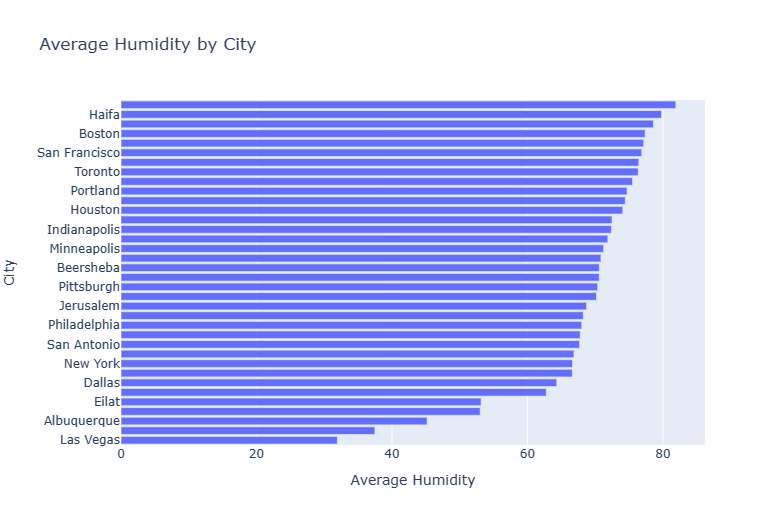
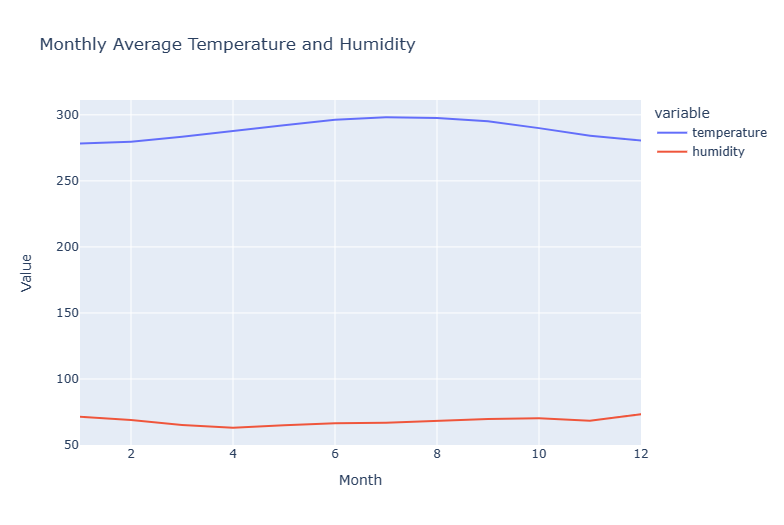

Temperature By City
Average Temperature by City: This visualization provides a clear comparison of the average temperatures across different cities. By assessing the bars' heights, one can easily discern which cities tend to be warmer or cooler on average.
Pressure In LA over Time
Pressure Variation Throughout the Year for Los Angeles (LA): This line chart depicts the variation in atmospheric pressure in Los Angeles throughout the year. Observing the peaks and troughs can give an understanding of how pressure patterns change seasonally.
Average Humidity By City
Average Humidity by City: This bar chart showcases the average humidity levels of various cities. Humidity can significantly impact comfort levels, with high humidity often making temperatures feel warmer than they actually are.
Monthly Average Temperature vs Humidity
Monthly Average Temperature vs Humidity: This chart displays the relationship between average temperature and humidity on a monthly basis. It helps in understanding how temperature and humidity correlate throughout the year.
Scatter Plot between Temperature and Humidity

Scatter Plot between Temperature and Humidity: This scatter plot provides a visual representation of the correlation between temperature and humidity. Each point represents a specific day, allowing for a detailed analysis of daily variations.